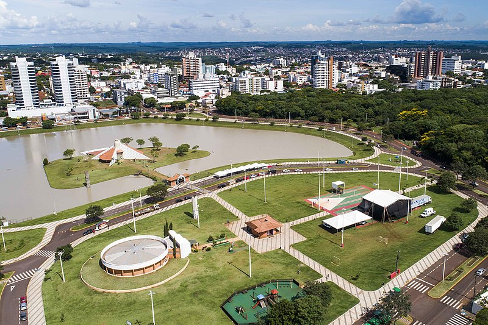
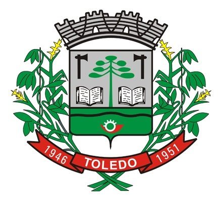
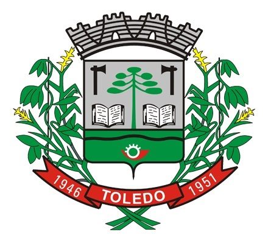
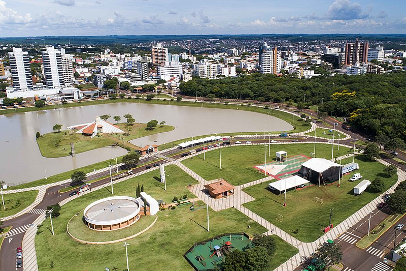
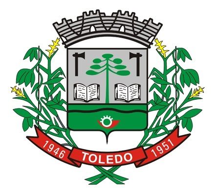

Toledo
Município do Brasil
Símbolos
 

"A capital do Agronegócio do Paraná"
"Toledo Cidade-Labor"
24° 42' 50" S 53° 44' 34" O
Brasil
Paraná
Toledo
Maripá, Nova Santa Rosa, Santa Tereza do Oeste, São Pedro do Iguaçu, Assis Chateaubriand, Tupãssi, Cascavel, Quatro Pontes, Marechal Cândido Rondon e Ouro Verde do Oeste
540 km
Fundação 14 de dezembro de 1951 (69 anos)
Aniversário 14 de dezembro
Prefeito(a) Luis Adalberto Beto Lunitti Pagnussatt (MDB, 2021 – 2024)
Vereadores 19
Área total 1 197,016 km²
População total (estimativa IBGE/2021) 144 601 hab.
Posição PR: 12º
Densidade 120,8 hab./km²
Clima Subtropical
Altitude 550 m
Fuso horário Hora de Brasília (UTC−3)
IDH 0,768 — alto
Posição PR: 10º
Gini (estatísticas IBGE/2010) 0,471
PIB (IBGE/2015) R$ Aumento4,872,319 mil
Posição BR: 197º
PIB per capita (IBGE/2015) R$ 36 889,99
Padroeiro(a) Cristo Rei
Sítio Site Oficial Prefeitura (Prefeitura)
Site Oficial Legislativo Municipal (Câmara)
Município do Brasil


O Município de Toledo prepara-se para chamada Indústria do Terceiro Milênio, contando com várias opções de turismo, lazer, gastronomia, cultura, esporte e eventos de negócios. Possui selos da EMBRATUR que o credenciam como município com potencialidade e prioridade para o desenvolvimento turístico.
Conta com belezas naturais, como cachoeiras, trilhas ecológicos no Rio São Francisco, com destaque para o Parque Ecológico Diva Paim Barth, em plena região central, com um lago, horto florestal.
O clima de Toledo é temperado, com chuvas bem distribuídas ao longo do ano e com verões quentes, a temperatura média do mês mais quente superior 22 °C, a temperatura média do mês mais frio inferior a 18 °C e a ausência de uma estação seca definida. O mês mais quente é janeiro, com uma temperatura média de 24,4 °C e o mais frio é junho, com uma temperatura média de 15,7 °C. A ocorrência de geadas é observada de um modo geral entre os meses de maio a agosto, quando as temperaturas se aproximam ou ficam abaixo dos 0 °C. Registros de neve e chuva congelada são raros, destacando-se a última ocorrência de neve no município no dia 23 de julho de 2013. A distribuição de precipitações ao longo do ano é relativamente uniforme, com um total anual acumulado de 1792 mm. O mês com maior média pluviométrica é outubro com 207 mm, e o de menor média pluviométrica é agosto com 92 mm.